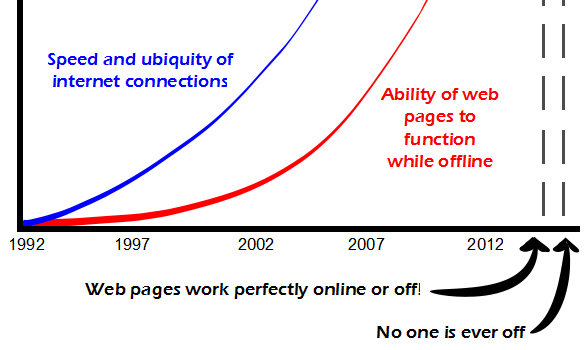

Comic JK 859
When I Feel Like It
⇤
<
?
>
⇥

⇤
<
?
>
⇥
Forum
.
RSS
.
Digg
.
Facebook
.
Reddit
.
Twitter
.
Stumbleupon
Enter your thoughts on number 859 here. Please, no spamming, trolling, or phreaking. v v v This is your delusional mother's work v v v >>> Wow.. ####### is very ######## about #########! >>>> Someone seems to have pulled out. >>>>> ... context please?? >>>>>> If ###### ever ######### or ########## the ########## in any way, shape or form, he throws a tantrum and ##### and deletes the [DATA EXPUNGED]. > Just for reference, it's us goodhearted commenters clearing your ********, not the author. >> It's true. We're nice guys and gals. >>> Nice like parents who always tell their shitty kids that they're perfect little angels and consequently destroy their adult lives. >>>>>>> How about this... the comics have been off a little the last few weeks. More random topics, less humor, feeling "unfinished". And I think that's been reflected in the comments here. >>>>>>>> Your cyclotron has been a little off the last week weeks. OFF THE *HOOK* i dont get it if by "it", you mean "satisfaction", well, neither does Mick Jagger, apparently... >Yes, I think that's what he meant. Obviously, this relies on HTML5's ability to download pages with no internet connection. surely the red graph is INABILITY, not ability ? most early web pages worked fine if saved to hard drive: it's more recent pages that are scripted to display incorrectly ( or not at all ) if unable to re-access multiple other tracker and ad-related scripts... ? >early pages with any functionality, like forms, relied entirely on server responses >>the point still stands though for pages without forms and other pages that specifically require continuous access as part of the service, such as eBay: they displayed fine when saved offline, whereas nowadays they have a tendency to fail because some script or other can't access the ad server or can't return tracking data... or can't access data for all of the scripts that create those damn-near ubiquitous links for "add me to your facebook / myspace / yahoo / reddit / twitter / friendster / 57 other anti-social systems"... I cached your mother and accessed her while offline. > Not possible. My mother doesn't take cache. Only credit. >> She might tell you that, but she makes exceptions for his best customers. >>> That's a smart mother. >>>> Yeah, much better than the sister I owned. What a smart-ass. >>>>> <g> >>>>>> <h> >>>>>>> g(h) >>>>>>>> A(g_64, g_64) >>>>>>>>> Aaugh! >>>>>>>>> A gee-gee? Hi ho Ag! >>>>>>>> BusyBeaver^(g_64)(g_64) >>>>>>>>> Your input is malformed. BusyBeaver only has one argument.